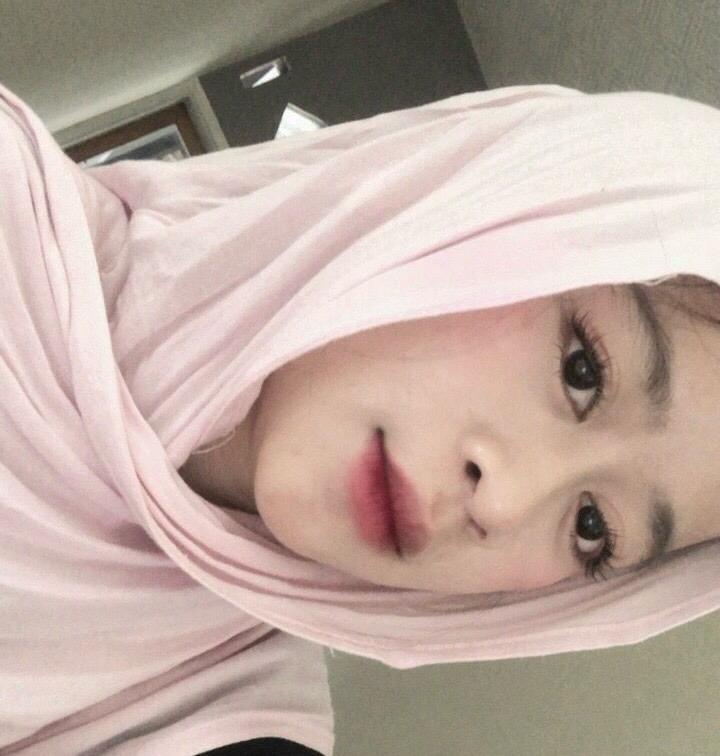
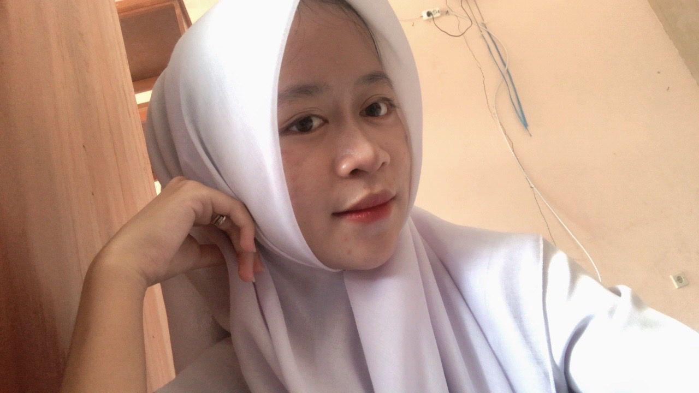
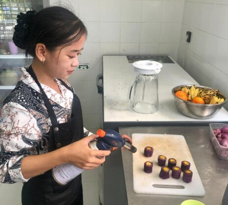
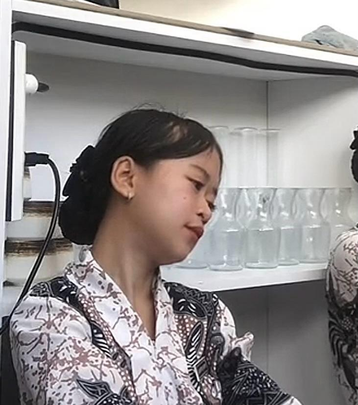
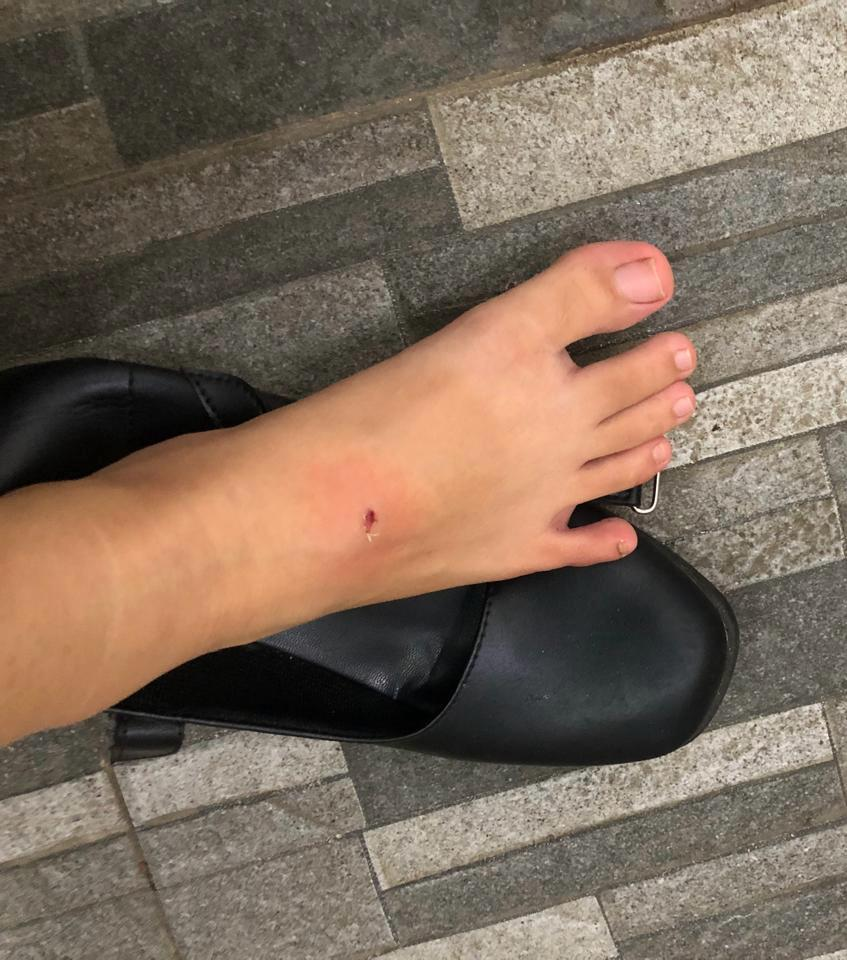
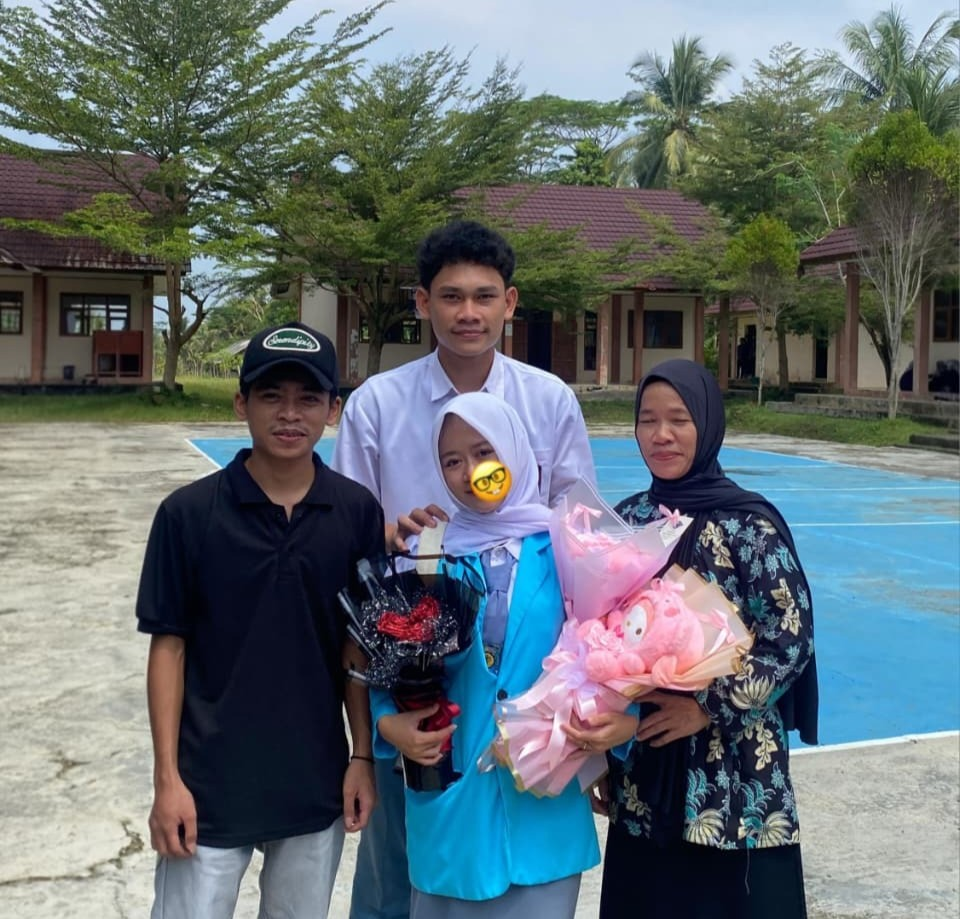

Ada sesuatu spesial untuk kamu 🌸

Selamat atas kelulusanmu Risma Putriana 🌸
Kamu berhasil melewati semua perjuangan itu dengan hebat.
Semua rasa capek, tugas, ujian,
dan perjuangan yang kamu lewati akhirnya terbayar ✨
Kamu adalah sosok yang luar biasa karena telah berhasil bertahan melewati berbagai masa sulit dan badai kehidupan. Meskipun langkahmu mungkin sempat berat, kamu membuktikan bahwa kamu tetap mampu melangkah maju dan tidak menyerah.
Ingatlah bahwa posisi kamu saat ini bukanlah sebuah kebetulan. Semua usaha, kerja keras, dedikasi, dan kecerdasan yang kamu kerahkan telah membuahkan hasil dan membawa kamu sampai ke titik ini.
Keberhasilanmu hari ini adalah bukti nyata yang tak terbantahkan. Ini adalah validasi bahwa setiap tetes keringat, waktu yang dikorbankan, dan perjuangan panjangmu tidak ada yang sia-sia.
Kemandirian yang kamu miliki bukan hanya kekuatan bagimu, tapi juga menjadi sinar yang menginspirasi banyak orang di sekitarmu. Teruslah tumbuh, berkembang, dan biarkan cahaya dirimu bersinar semakin terang.
Jadikanlah pencapaianmu saat ini sebagai batu pijakan. Ingatlah bahwa ini hanyalah awal dari perjalanan panjang menuju kesuksesan-kesuksesan yang jauh lebih besar dan luar biasa di masa depan.
Momen ketika langkah kaki pertama kali menapak di lingkungan baru. Ada getaran semangat untuk mengejar mimpi, namun di sisi lain terselip rasa takut dan cemas akan ketidakpastian yang menanti di depan.
Fase di mana hari-harimu diisi dengan tumpukan tugas, laporan praktikum yang seolah tak ada habisnya, dan tekanan ujian yang menguras energi. Rasa lelah fisik dan mental menjadi teman setia dalam proses pendewasaan ini.
Ada titik-titik rendah di mana air mata jatuh karena sedih, rasa kecewa pada diri sendiri, hingga terjebak dalam overthinking yang melelahkan. Namun, keajaiban sebenarnya adalah kamu memilih untuk tidak menyerah dan tetap bertahan meskipun segalanya terasa berat.
Puncak dari segala pengorbanan. Hari di mana semua perjuangan, doa, dan air mata akhirnya bermuara pada kemenangan. Kamu telah membuktikan bahwa kamu berhasil menyelesaikan setiap tantangan dengan sangat luar biasa.
Semua proses ini jadi bagian dari perjuangan hebatmu 🌸

Langkah kaki ini pertama kali menapak di gerbang SMK dengan rasa takut yang bersembunyi di balik semangat yang menggebu. Segala sesuatu terasa baru, sebuah perjalanan asing yang dimulai dengan harapan besar untuk masa depan. ✨

Memasuki masa praktek dan magang, tangan-tangan ini mulai belajar tentang arti kerja keras yang sesungguhnya. Di sinilah teori bertemu dengan realita, di mana setiap peluh yang menetes menjadi saksi proses pendewasaan diri. 💖

Ada malam-malam panjang yang diisi dengan rasa lelah yang luar biasa, tumpukan tugas yang menguras energi, dan hati yang seringkali merasa goyah. Ada kalanya air mata jatuh karena tekanan yang terasa begitu berat untuk dipikul sendirian.😔

Perjalanan ini tidak selalu mulus; ada luka-luka kecil, kekecewaan, dan kegagalan yang sempat meninggalkan bekas. Namun, justru dari luka-luka itulah kamu belajar untuk tetap bertahan dan membuktikan bahwa dirimu jauh lebih kuat dari segala rintangan.🩸

Kini, semua lelah dan luka itu terbayar tuntas saat kamu berdiri dengan toga, menyelesaikan semuanya dengan sangat luar biasa. Hari ini adalah bukti abadi bahwa tidak ada satu pun perjuanganmu yang sia-sia. 🎓🌸
Keberhasilanmu saat ini dalam menyelesaikan perjalanan pendidikan merupakan bukti nyata atas ketangguhanmu melewati masa-masa sulit, tumpukan tugas yang melelahkan, hingga perasaan cemas yang menyelimuti langkah awalmu. 🌸
Dunia mungkin tidak akan selalu memberikan jalan yang mudah, namun dengan kecerdasan dan kekuatan yang telah kamu buktikan selama ini, kamu telah memvalidasi bahwa tidak ada perjuangan yang sia-sia demi meraih gelar kelulusan tersebut. 🌟
Jangan pernah ragu untuk terus melangkah maju menjemput masa depan, karena kemandirianmu adalah cahaya yang akan terus tumbuh dan membawamu menuju kesuksesan yang jauh lebih besar lagi. ✨
Tetap jadi perempuan kuat,
perempuan pintar,
dan perempuan hebat seperti sekarang 💖
Risma Putriana 🌸
Abang bangga banget sama semua perjuangan dede.
Dari awal sekolah,
tugas yang numpuk,
ujian,
rasa capek,
overthinking,
sampai akhirnya dede berhasil lulus sekarang ✨
Semua itu nggak mudah,
tapi dede berhasil ngelewatin semuanya dengan hebat 💖
Jangan pernah ragu sama diri sendiri yaa.
dede itu perempuan kuat,
perempuan pintar,
dan perempuan yang punya masa depan cerah 🌸
Semoga setelah ini,
semua mimpi dan harapan dede bisa tercapai satu-satu 🎓
Tetap jadi dede ana yang baik,
manis,
lucu,
dan selalu semangat ✨
Sekali lagi...
Selamat graduation Risma Putriana 💖🌸
Love Abang💖